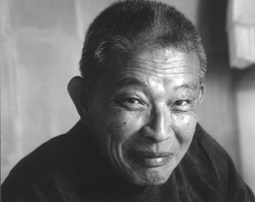

About "Leaves From the Vine(Little Soldier Boy)"
This peom is from the popular Nickelodeon carton Avatar: The Last Airbender.
Uncle Iroh is the character who sings this poem in season two of the show on
birthday of his deceased son who died in a war. However, this peom is also a tribute
to the Voice actor of Uncle Iroh, named Mako Iwamatsu. Mako Iwamatsu was a Japanese
voice actor and singer who played many roles. One of his best known roles is Po-Han
from The Sand Pebbles. For American and English audiences, they will best know him
as Aku from Samuri Jack and of course Uncle Iroh from Avatar: The Last Airbender.
He has a star on the Hollywood Walk of Fame and was nominated. Tony Award in 1976 for
Best Actor in Musical. On July 21, 2006 Mako died from esophageal cancer. On
September 29, 2006 the Avatar: The Last Airbender team released a mini series called
"The Tales of Ba Sing Se" in which Uncle Iroh sang the poem as a Tribute to Mako.
In the sequal series The Legend of Korra, a lead male character was named after Mako.

This is a picture of Uncle Iroh.

This is a picture of Mako.